Yi：01.AI 的开放基础模型
论文发布日期
作者： 01.AI 团队
代码： https://github.com/01-ai/Yi
模型： https://huggingface.co/01-ai
论文版本： arXiv:2403.04652v3，2025 年 1 月 21 日
译文说明： 本译文按论文顺序逐段翻译。模型名、数据集名与技术缩写保留通行写法；图、表、作者名单及参考文献以原论文整页截图呈现。
摘要
本文介绍 Yi 模型家族，这是一系列在多个维度展现强大能力的语言模型与多模态模型。Yi 家族以 60 亿和 340 亿参数预训练语言模型为基础，进一步扩展出聊天模型、20 万词元长上下文模型、深度扩展模型与视觉—语言模型。基础模型在 MMLU 等广泛基准上表现强劲，微调聊天模型则在 AlpacaEval 和 Chatbot Arena 等主要评估平台上获得很高的人类偏好率。
Yi 建立在可扩展超级计算基础设施和经典 Transformer 架构之上；我们认为，其表现主要源于数据工程带来的数据质量。预训练阶段，我们通过级联数据去重与质量过滤流水线构建 3.1 万亿词元的中英文语料。微调阶段，我们经过多轮迭代打磨一个规模较小、不足一万条的指令数据集，其中每个样本都由机器学习工程师直接核验。视觉—语言训练把聊天语言模型与视觉 Transformer 编码器结合，并让视觉表示与语言模型语义空间对齐。
我们还通过轻量持续预训练把上下文长度扩展到 20 万，并在“大海捞针”检索测试上取得强劲表现。实验显示，通过持续预训练增加预训练检查点的深度，也能进一步改善性能。根据当前结果，我们相信，继续使用经过彻底优化的数据扩大模型参数，将产生能力更强的前沿模型。
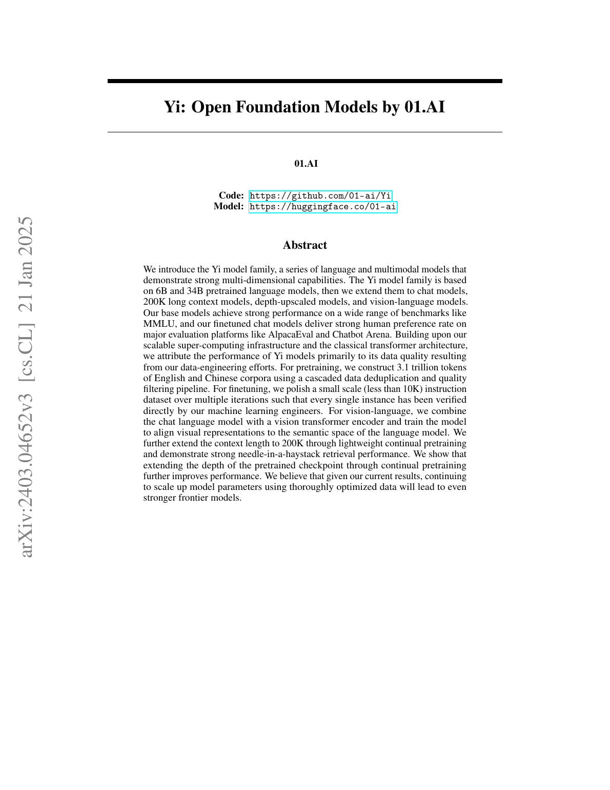
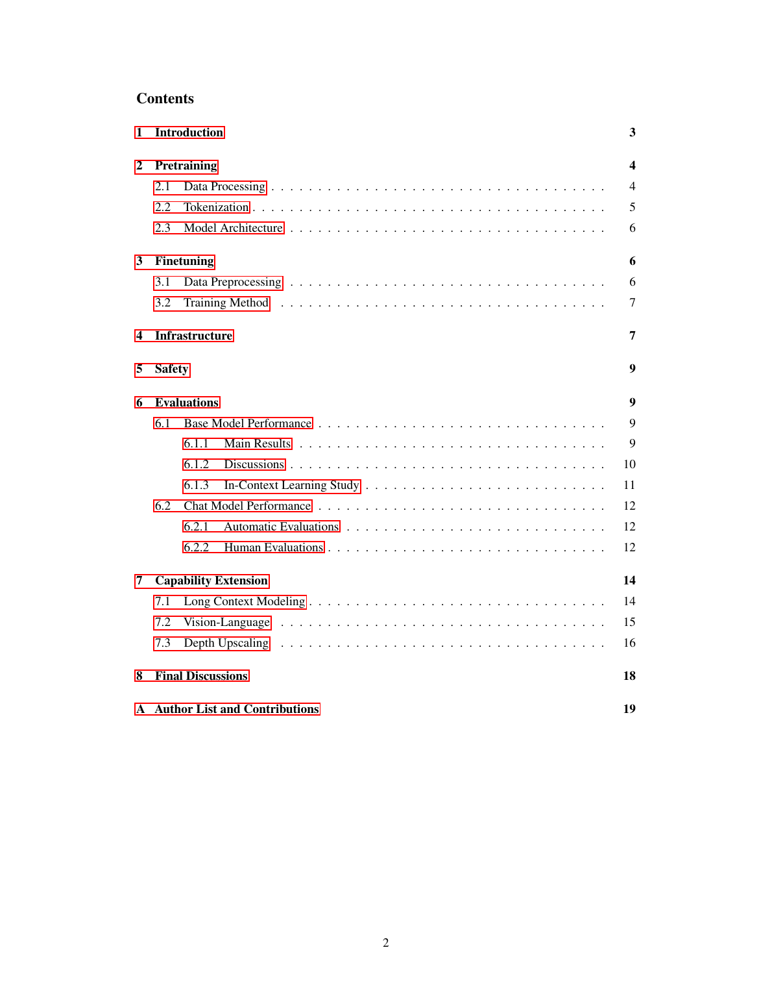
1 引言
大型语言模型近期的突破彻底改变了整个人工智能领域，并可能辐射整个人类社会。我们对 LLM 的愿景，是让它成为下一代计算平台，用被显著放大的智能赋能整个社群。作为迈向这一使命的一步，我们推出 Yi 模型系列：60 亿与 340 亿参数语言模型从头开始，在经过高度工程化处理的 3.1 万亿词元数据上预训练，再使用规模虽小却经过精细打磨的对齐数据微调。由于大量工程投入带来的数据质量——后文将详细介绍——Yi 在基准分数和人类偏好上接近 GPT-3.5。
设计 Yi 系列时，我们主要从模型规模、数据规模与数据质量四个方面考虑。
- 选择模型规模时，目标是让模型足够小，可以在 RTX 4090 等消费级硬件上推理；这类设备的主要限制是 24GB 显存。与此同时，模型还必须足够大，以具备复杂推理和涌现能力。我们发现 340 亿参数在性能与成本间取得良好平衡。
- 340 亿参数小于 Chinchilla 与 LLaMA 通常采用的 700 亿规模，因此我们把预训练数据增加到 3.1 万亿词元，以补偿计算量减少。这个模型—数据组合落在 Chinchilla 最优之后的区域，即使用比计算最优值约一万亿更多的三万亿词元“过度训练”模型。其收益体现在推理侧：以较低服务成本获得更强表现。经过 Int4 量化后，340 亿参数聊天模型可在 24GB GPU 显存上运行，性能几乎不下降。
- 预训练与微调都遵循“质量优先于数量”的数据工程原则。复杂的数据清洗流水线通过级联过滤方法和有意增强的去重保证预训练数据质量。
- 微调数据同样强调质量：根据用户反馈，经过多轮迭代手工构造不足一万条指令。这与 FLAN、UltraChat 等扩大指令数量的方法明显不同，而更接近 LIMA 的精工细作路线。
预训练数据清洗系统采用复杂过滤流水线，依据语言、启发式文本特征、困惑度、语义、主题与安全性筛选，还以段落、MinHash 和精确匹配进行级联去重。其删除比例远高于 CCNet、RefinedWeb 与 RedPajama 等既有流水线；我们认为这是数据工程成功的关键。其基本原则是：预训练固然需要扩大数据，但必须确保数据质量。换言之，我们宁愿使用经复杂工程处理的三万亿词元，也不愿使用未充分过滤的十万亿词元。
模型架构采用标准 Transformer 实现，使用分组查询注意力（GQA）、SwiGLU 激活函数，以及调整基础频率的 RoPE（RoPE ABF）。这一设计源自原始 Transformer 论文，后经 GPT-3 与 Chinchilla 修改，又被 LLaMA、百川、通义千问等工作沿用。
为了在人类偏好上接近 GPT-3.5，我们从精心选择的多轮“指令—回答”对中构建微调数据集，由机器学习工程师直接标注，再依据用户反馈反复打磨。数据不足一万条，却在模型开发周期中持续改进。规模可控让我们能够进行大范围网格搜索，找出最佳数据组成、提高多样性并发现有效超参数。经过八比特或四比特量化后，最终聊天模型可部署在消费级 GPU 上，相较 BF16 格式几乎没有性能损失。
我们从三个方向扩展 Yi：上下文扩展、视觉—语言适配与深度扩展。为实现 20 万上下文，使用约 50 亿条经过长度上采样的数据继续预训练，与 Fu 等人的同期工作类似。视觉—语言适配加入视觉编码器并开发多阶段训练方法，在 Liu 等人实践基础上改进。我们还研究通过持续预训练增加模型深度，并证实它能进一步改善性能。
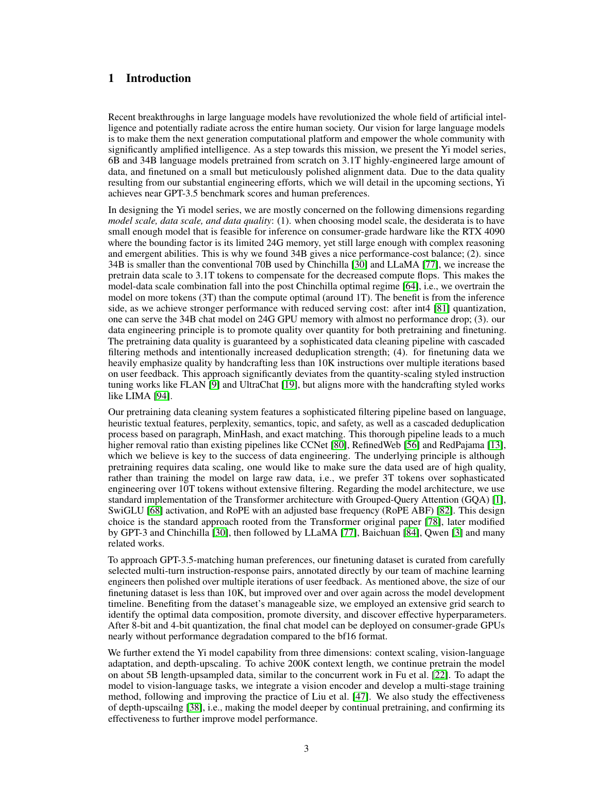
基础设施为 Yi 从预训练、微调到服务的全栈开发提供支持。预训练侧开发跨云弹性任务调度、自动故障恢复与拓扑感知资源分配，使任务能依据多个集群中实时可用的 GPU 节点运行，切换开销有限。微调侧建立分层调度框架，针对不同模型支持不同分布式后端，例如策略模型使用 Megatron，奖励模型使用 DeepSpeed。高效推理则结合四比特模型量化、八比特 KV 缓存量化、PagedAttention 与动态批处理。
大量实验表明，Yi-34B 在性能与效率两方面都可匹配 GPT-3.5。在 MMLU 等基础模型标准基准和 LMSys Elo 评分等聊天模型基准上，Yi-34B 通常达到与 GPT-3.5 相当的成绩。量化模型参数与 KV 缓存后，推理成本得到控制，社群可以在经济设备上广泛部署。本文还详细比较 Yi 与主要 LLM 在常识推理、大学考试、数学、编程、阅读理解及多个评估基准上的人类偏好胜率。
Yi 系列发布后从三方面惠及社群：（1）为研究者提供质量匹配 GPT-3.5、成本却更低的模型，使开发者能够构建基于语言模型智能体等人工智能原生应用；（2）让最终用户可以在本地运行聊天机器人，从而帮助保护数据隐私；（3）为继续扩大数据与模型、构建能力更强的前沿模型指明方向。Yi 同时支持研究与商业用途。
2 预训练
我们的预训练方法，是在经过大量工程处理的大型预训练语料上训练标准稠密 Transformer。基本假设是：标准架构只要在数量充足、质量足够高的数据上训练，就能表现出高级能力。虽然我们做过大量前期架构实验，但这意味着未必需要大幅修改架构。下面先介绍数据工程流水线，再简述模型架构。
2.1 数据处理
Yi 数据混合见图 2。为生成高质量双语预训练数据，我们精心设计图 1 所示的级联数据处理流水线，其中包含一系列针对质量与多样性的数据清洗策略。流程从 Common Crawl 网络文档开始，先用 CCNet 进行语言识别与困惑度评分，再结合过滤和去重。
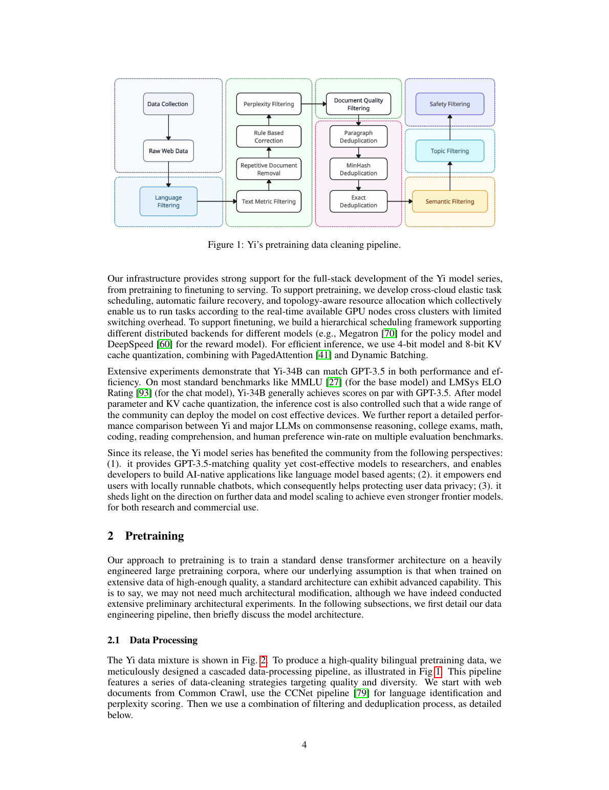
2.1.1 启发式规则过滤
这部分过滤旨在删除低质量文本，依据包括：（1）网址、域名、词语黑名单与乱码；（2）文档长度、特殊符号比例，以及短行、连续行或不完整行的比例；（3）重复词、n 元语法或段落。阈值根据大型文档样本的统计分析确定。我们还识别并匿名化电子邮件地址、电话号码等个人身份信息。
2.1.2 学习式过滤
对标准启发式规则难以处理的细腻情形，我们使用学习得到的过滤器。Common Crawl 中抽取的中文内容具有独特挑战，不当内容——尤其色情与赌博——比例更高，传统启发式过滤难以全部识别并删除。因此，我们集成四类学习式评分器。
- 困惑度评分器： 按 CCNet 方法使用 KenLM 评估大量网络文档，丢弃困惑度远高于平均值者。
- 质量评分器： 训练分类器识别质量与维基百科相近的页面并相应评分，删除不符合质量标准的文档。
- 文档连贯性评分器： 识别由互不相关句子或段落拼成的不连贯低质量文档，再把它切分以便进一步分析，或直接删除。
- 安全评分器： 识别并删除含暴力、色情与政治宣传等有害内容的网络文档。
2.1.3 基于聚类的过滤
我们进一步使用无监督语义聚类对网络文档分组，以高效识别和分析具有相似语义特征的文档。聚类数据随后被赋予质量标签，为优化 Yi 数据混合策略提供关键依据。经自动与人工核验认定为低质量的文档会被排除。
2.1.4 去重
过滤后，按照 Penedo 等人的流程实施全面去重，结合文档级 MinHash 与子文档精确匹配，有效识别并删除文档内部及文档之间的重复内容。我们还用主题模型把网络文档划分为新闻、广告、知识性内容等类别。在最终预训练数据中，对帮助较少、主要为广告的内容进行降采样，以保证信息密度。最终数据组成见图 2。
2.2 词元化
我们使用 SentencePiece 框架实现的字节对编码（BPE）对预训练数据分词。Yi 词表大小为 64,000，以平衡计算效率与词语理解。数字被拆成单个数位，帮助模型更好地理解数值数据。稀有字符可退回 Unicode 字节编码，保证容错能力。我们使用恒等规范化，避免把所有标点转换为半角形式。
以英文为主的 LLM 分词器通常加入虚拟前缀，即在文本开头放置空格，使位于句中不同位置的相同词得到统一表示。我们没有采用，因为这一假设即使在英文中也不总成立，尤其是以引号开头的句子；在中文语境中也没有观察到正面效果。
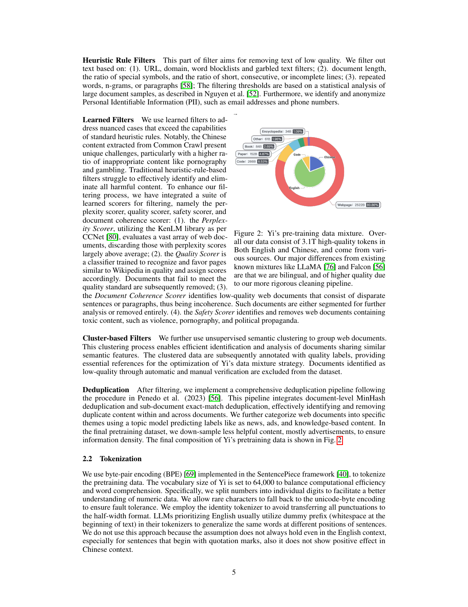
2.3 模型架构
Yi 使用经典仅解码器 Transformer 的修改版本，代码基于 LLaMA 实现，主要参数见表 1。相较 LLaMA，修改如下。
2.3.1 注意力机制
LLaMA 2 只在最大的 70B 模型中采用分组查询注意力，7B 与 13B 使用完整注意力。Yi-6B 与 Yi-34B 均采用 GQA。GQA 把查询头分成 G 组，同组查询共享一个键头和值头；与原始多头注意力相比，能显著降低训练与推理成本。即便应用于较小的 Yi-6B，我们也没有观察到性能下降。
2.3.2 激活函数
Yi 的注意力后层使用 SwiGLU，并把激活维度从 4h 减至 8h/3，其中 h 为隐藏维度，以与普通注意力后层保持一致。这也补偿 GQA 带来的参数减少，使总参数量与现有 7B、34B 模型相当。
2.3.3 位置嵌入与长上下文
Yi 按标准实现使用旋转位置嵌入（RoPE），并调整基础频率，即 RoPE ABF，使只在 4K 上下文上训练的基础模型也能支持最长 20 万上下文。为适配更长上下文，我们在约 100 亿个预训练数据混合词元上继续预训练，并轻度提高主要来自图书的长序列占比。
实验观察到，只需 10 亿至 20 亿词元，模型在 4K 至 20 万长度范围的损失就能收敛到较低水平；再做轻量微调，即可获得近乎完美的长上下文检索。由此我们倾向于认为，建模比预训练长度 4K 更长依赖关系，是模型的内在能力，而非后训练注入的能力。基础模型即使训练序列较短，也已具备建模更长依赖的潜力，后训练或微调只是把它释放出来。
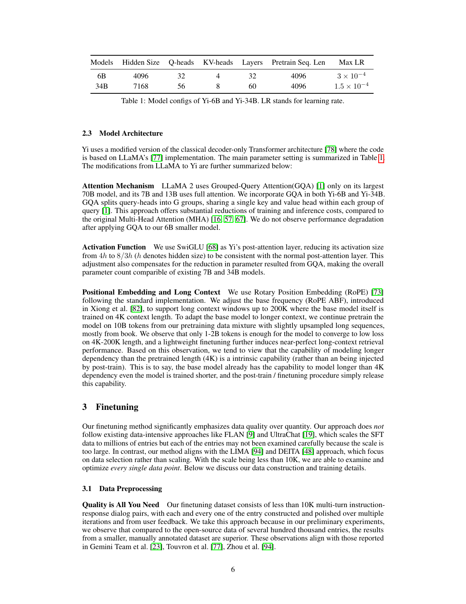
3 微调
Yi 微调强烈强调数据质量而非数量。它不沿用 FLAN 与 UltraChat 那种把 SFT 数据扩大到数百万条的高数据量方法；规模太大时，每条数据难以仔细检查。相反，Yi 与 LIMA、DEITA 一样重视数据选择。数据不足一万条，使我们能够逐条审查并优化。下面介绍数据构造与训练细节。
3.1 数据预处理
3.1.1 质量就是一切
微调数据集包含不足一万组多轮“指令—回答”对，每条都在多轮迭代与用户反馈中构造、打磨。前期实验发现，相比数十万条开源数据，小型人工标注数据集结果更好；这与 Gemini、LLaMA 2 和 LIMA 报告的观察一致。
为改进提示分布、回答格式与思维链格式，我们采用三项技术：（1）提示分布方面，受 WizardLM 启发，开发复合指令并逐步演化以提高复杂度，实验中显著减少 SFT 数据需求；（2）回答格式通常使用从 LIMA 扩展的默认风格，总体为“引言—正文—结论”，正文常以项目列表组织；（3）思维链数据采用受 Step-Back Prompting 启发的“后退一步”模式，先抽象形成高层解法，再深入推理原始具体问题。
我们还额外减少幻觉与重复：（1）为降低幻觉，检查并确保回答涉及的知识并非模型内部未知，删除可能导致死记硬背的回答；（2）重写回答中常见却可能在微调数据里被忽视的重复轮次。
3.1.2 多样性与数据混合
为覆盖不同能力，我们纳入广泛开源提示，涉及问答、创意写作、对话、推理、数学、编程、安全和双语能力等。
受 InsTag 启发，我们开发指令标签系统，以细粒度控制不同能力方向。一个专注多样性的采样算法谨慎平衡各标签的指令分布，确保微调数据多样，提高跨任务稳健性。
为寻找不同能力方向间的最佳数据比例，我们进行近似网格搜索，对每种能力分别尝试 1、1/2、1/4、1/8、1/16、1/32 和 1/64 的比例，并由验证结果与内部人工评估集引导搜索。
3.1.3 ChatML 格式
除数据质量与多样性外，观察还表明数据格式会显著影响最终性能。为此采用 ChatML 风格格式，使模型能够区分系统配置、用户输入与助手回答等信息类型。
3.2 训练方法
微调使用下一词预测损失，只在回答上计算损失，不对系统与用户指令计算。优化器为 AdamW，β₁=0.9、β₂=0.999、ε=10⁻⁸。序列长度 4,096，批量大小 64，训练 300 步，学习率恒定为 1×10⁻⁵，权重衰减 0.1，梯度裁剪上限 1.0。Yi-34B-Chat 使用噪声尺度 45 的 NEFTune，Yi-6B-Chat 使用尺度 5。
4 基础设施
我们构建覆盖数据处理、预训练、微调与服务的全栈基础设施，其特点包括：（1）自动管理和监控计算资源；（2）通过优化并行策略、内核效率与长上下文支持提高训练速度；（3）统一微调框架支持异构分布式训练后端，例如在 DPO 中同时让多个模型使用 Megatron 与 DeepSpeed；（4）通过量化、连续批处理、分页注意力等服务加速方法降低部署成本。
4.1 计算资源管理
大规模语言模型开发——尤其在数千 GPU 上持续数月的预训练——需要高效调度。我们构建高效率多云任务调度算法，管理不同优先级的预训练、SFT 与 RLHF 任务；内部高性能训练框架可依据 GPU 可用性，把预训练任务自动弹性扩缩到不同节点规模，更重要的是，所有训练超参数会同步无缝缩放。
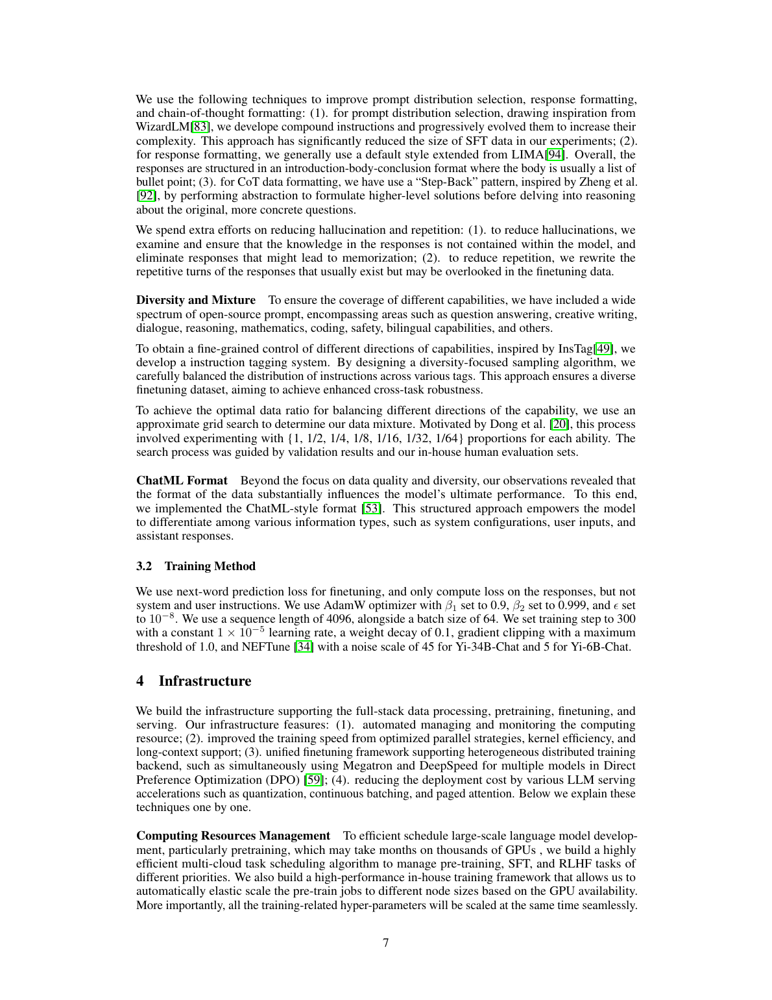
LLM 训练期间经常发生 GPU 崩溃、通信网络错误与损失尖峰等多类故障。我们以三项策略应对可靠性挑战：（1）自动检查、预测节点并按软硬件错误类型打标签，受污染节点暂时移出资源池，直到故障清除；（2）实现带预检查的任务排队系统，训练失败时快速自动恢复；（3）开发易用的多任务提交与管理控制台，使开发者能够无缝管理、跟踪训练任务及超参数。
4.2 性能与成本效率
内存与通信限制是大规模模型训练的两大技术挑战，不能只靠增加 GPU，必须综合解决。我们使用并改进以下技术：（1）ZeRO-1，把优化器状态分区到数据并行进程，消除相应内存占用；（2）在每个计算节点内结合张量并行与流水线并行，避免跨节点通信瓶颈，并优化三维并行策略，使其无须激活检查点且尽量减少流水线气泡；（3）FlashAttention 与即时编译内核等内核融合技术，减少冗余全局内存访问与占用；（4）拓扑感知资源分配，即排序策略，尽量减少跨不同交换机层的通信，缓解典型胖树拓扑的限制。
4.3 微调框架
预训练通常只涉及一个模型，LLM 微调则可能要协调多个模型，DPO 与 PPO 都是如此。典型流程是先让参考模型或奖励模型预测一批数据，这本身需要不少时间，再让目标模型据此计算损失并更新参数。因此，我们建立多模型调度框架，使同一任务中的不同 LLM 可使用不同后端。例如，使用 DPO 微调时，参考模型中间结果可以缓存并复用，让训练速度与资源成本接近监督微调。
4.4 快速高效推理
主要以量化、动态批处理和 PagedAttention 改善解码速度与内存使用。四比特模型量化和八比特 KV 缓存量化显著节省 GPU 内存，性能几乎不下降，例如 MMLU、CMMLU 准确率下降不足 1%。动态批处理缩短响应时间并提高批处理效率，PagedAttention 提高内存利用率并改善解码。
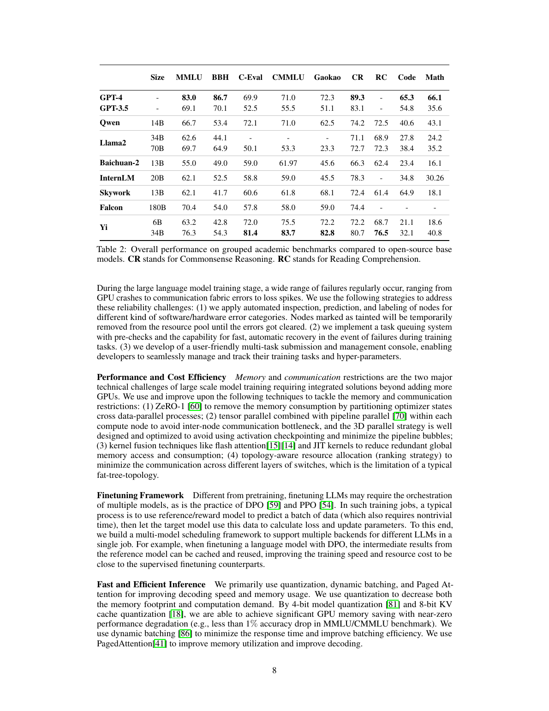
4.5 长上下文窗口支持
我们实现并改进计算—通信重叠、序列并行和通信压缩，以支持最长 20 万上下文的持续预训练与微调。上下文扩展完全依赖工程实现，没有把模型改成稀疏、局部或滑动窗口注意力；即使输入达到 20 万，模型仍使用完整注意力。
5 安全
为提高可信度与安全性，我们开发全栈“负责任人工智能安全引擎”（RAISE），保障安全预训练、对齐与部署。本节介绍预训练和对齐阶段的安全措施。
5.1 预训练安全
遵循标准预训练数据安全实践，使用基于启发式规则、关键词匹配与学习式分类器的一组过滤器，删除包含个人身份标识与私密数据的文本，并减少色情、暴力和极端主义内容。
5.2 对齐安全
依据既有研究，首先建立全面安全分类体系，覆盖环境不和谐、迷信、宗教敏感、歧视行为、物质滥用、暴力行为、非法活动、仇恨言论、伦理违规、隐私泄露、自残、露骨色情内容、心理健康问题与网络安全威胁等广泛风险。我们构建反映这些类别的数据集以稳健对齐，并与对话 SFT 数据混合。对齐阶段还加入专门模拟攻击情景的一组提示，有效提升模型抵抗恶意使用的能力。
6 评估
评估表明，Yi 家族在广泛任务上表现出色，用户偏好率接近 GPT-3.5。下面先报告基础模型标准基准表现，再讨论聊天模型表现与用户偏好率。
6.1 基础模型表现
6.1.1 主要结果
我们比较 Yi 基础模型与若干知名基础模型在标准学术基准上的结果。评测开源模型时，观察到我们的流水线结果与公开报告不一致；深入分析发现，主要原因是不同模型采用不同提示、后处理策略和采样技术，足以造成显著结果差异。
我们的提示与后处理策略保持基准原始默认设置，使用贪心解码，不对生成内容做后处理。对于未公开报告、或报告设置不同的成绩，使用自有流水线重测；可从公开来源找到且设置一致的则直接引用。主要基准大体沿用 LLaMA 2 的实践：
- 常识推理： PIQA、SIQA、HellaSwag、WinoGrande、ARC、OpenBookQA 与 CommonsenseQA。CSQA 使用七样本，其余均为零样本。
- 阅读理解： 报告 SQuAD、QuAC 与 BoolQ 的零样本平均值。
- 数学： GSM8K 使用八样本、MATH 使用四样本，报告 Pass@1 准确率平均值，不使用思维链等专用提示策略或多数投票等集成技术。
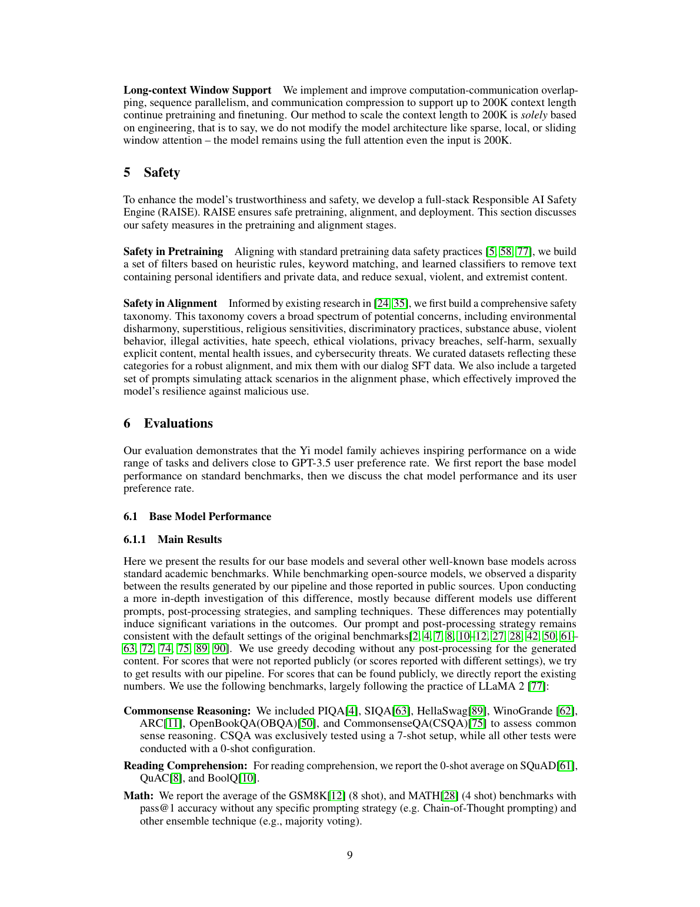
- 代码： 报告 HumanEval 与 MBPP 的平均 Pass@1。
- 常用综合基准： 报告 MMLU 五样本、CMMLU 五样本、高考基准五样本，以及 BIG-bench Hard 三样本的总体结果。
Yi 使用 3.1 万亿词元，显著多于以往工作通常不超过两万亿的规模，因此在各基准上获得大幅提升，如表 2 所示。但数学与代码任务上，与现有开源、闭源模型仍有明显差距。这些领域可以通过持续预训练和指令微调显著改善；初始设计时，我们没有在预训练语料中大量加入数学与代码内容，未来计划发布增强数学与代码能力的模型。
6.1.2 讨论
模型规模带来的收益。 Yi-34B 与 Yi-6B 使用相同预训练语料，前者仍有大幅性能提升。表 3 表明，扩大模型对代码和数学的收益，高于对常识推理、阅读理解与知识基准的收益。
数据质量。 使用高质量预训练数据的较小模型，如 Yi-34B、Qwen-14B，通常优于规模更大但数据质量可能较低的 Falcon-180B；当然，Falcon-180B 侧重扩展本身，这也具有独立价值。
GPT-4 与开源 LLM 的差距。 表 2 显示，开源 LLM 在多项基准上仍落后 GPT-4 与 GPT-3.5。不过，Qwen-14B、Yi-34B 等代表性双语模型，在 C-Eval、CMMLU 和高考基准等中文知识测试上，可以达到甚至超过 GPT-4。BBH、HumanEval、MATH 等推理、代码与数学基准上，GPT-4 与开源模型仍有巨大差距。
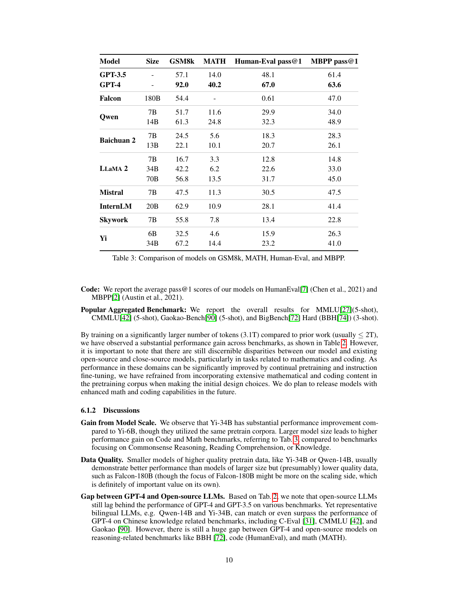
6.1.3 上下文学习研究
我们进一步研究上下文学习，即根据少量输入—输出演示推断底层函数的能力。任务是推断加权和的线性系数。具体而言，定义 y=w₁x₁+w₂x₂+…+wₙxₙ，少样本演示给出 x₁、x₂、…、xₙ、y；随后提供一组新输入 x，要求模型通过预测 y 隐式推断 w₁、w₂、…、wₙ。
评估使用两种指标：（1）模型预测 y 与真实值 y 的绝对差 |y−y|，作为连续指标；（2）精确匹配 y=y*，作为离散指标。大多数模型都能较好地完成加减法，因此算术能力这一混杂因素可以排除。
结果见图 3。线性系数为 [1,−1] 时，Yi-34B 与 LLaMA-2-70B 的答案精确匹配最好。把系数增加为 [1,1,1,1,1] 后出现涌现行为：只有 LLaMA-2-70B 与 Mixtral 等足够大的模型能在精确匹配上取得良好成绩，虽然“与目标之差”这个连续指标的变化更平滑。这些观察从侧面证明 Yi-34B 的上下文学习表现，也表明继续扩大规模可能使模型通过上下文学习推断更复杂的函数。
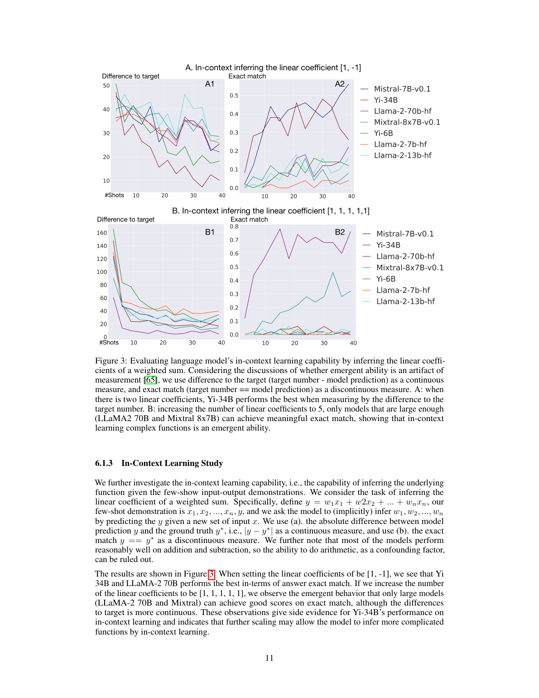
6.2 聊天模型表现
本节报告聊天模型的自动评估与人类偏好评估。生成回答使用贪心解码。自动基准中，从模型输出提取答案并计算准确率。不同提示对结果影响不同，因此在同一组问题上用完全相同的提示评估所有模型，尽量保证公平、无偏。
6.2.1 自动评估
自动评估使用与基础模型相同的基准。零样本和少样本方法均有采用，但聊天模型通常更适合零样本。评估要求模型显式或隐式遵循指令，例如遵循少样本示例格式，再从生成文本中分离相关答案。与基础模型不同，GSM8K 与 BBH 的零样本评估会使用思维链，引导模型先思考再作答。
表 4 证明 Yi 聊天模型能够理解人类指令并生成适当的指令遵循回答。我们特别突出四比特量化结果：它大幅降低内存需求，模型性能却几乎不下降，这是在消费级设备上提供服务的基础。
按照古德哈特定律，一项度量一旦成为追求目标，就不再是可靠的评价标准。因此，基准评估结果只用于确认对齐训练没有损害基础模型的知识与能力，不会为了提高基准分数对聊天模型作定向优化。
为进一步评估能力泛化，我们使用 2023 年匈牙利高中数学毕业考试题测试数学计算能力。这项测试最初由 xAI Grok 团队提出，随后由 Paster 复现，目的是判断模型是否对数学训练数据过拟合。图 4 显示，Yi-34B-Chat 在 GSM8K 与匈牙利数学考试上均表现出色，但 Yi-6B-Chat 的数学能力并不强。我们推测，小模型在 SFT 阶段可能需要更多数据才能激活相应能力。
6.2.2 人类评估
我们从有效性和安全性等方面评估模型对话能力，汇集 AlpacaEval、BELLE-Eval 与 MT-Bench 等社群开源评估数据，还收集、构造不同难度数据，建立内部“有帮助且无害”评估集，全面评价聊天模型。
无论公共还是自建评估，结果都强烈受评价标准与提示设计影响。内部结果可能对其他模型不公平，难以准确代表 Yi 的真实能力，因此这里只给出外部评估：
- AlpacaEval： 比较指定模型回答与 Davinci-003 参考回答，计算英语对话胜率。
- LMSys Chatbot Arena： 在对话平台展示不同模型回答，让用户按偏好选择，再计算 Elo 分数。
- SuperCLUE： 全面评估模型中文能力的排行榜。
表 5 汇总 Yi-34B-Chat 在三项第三方评估中的表现，结果截至 2023 年 12 月 21 日。虽然与 GPT-4 仍有差距，Yi 已展现熟练的中英文双语对话能力，并能较好符合用户偏好。更多模型比较可在各评估官网查看。
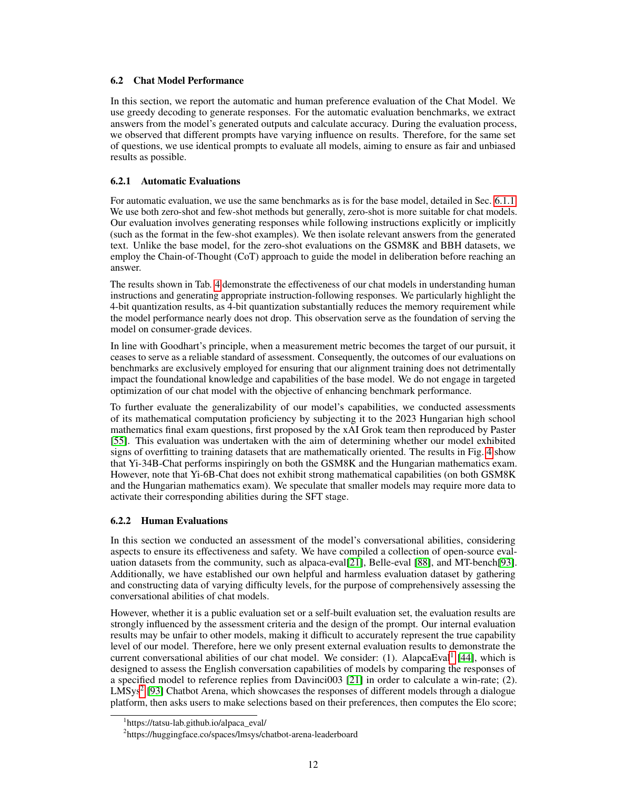
表 4 还展示原始、八比特 GPTQ 与四比特 AWQ 版本。Yi-34B-Chat 的 MMLU 零样本/五样本成绩为 67.6/73.5，四比特版本为 65.8/72.4；GSM8K 零样本/四样本分别为 71.7/76.0 与 70.5/74.0，说明显存大幅降低时性能只小幅变化。
图 4 的散点图同时比较匈牙利考试与 GSM8K；Yi-34B-Chat 位于较高区域，而 GPT-4 仍领先。
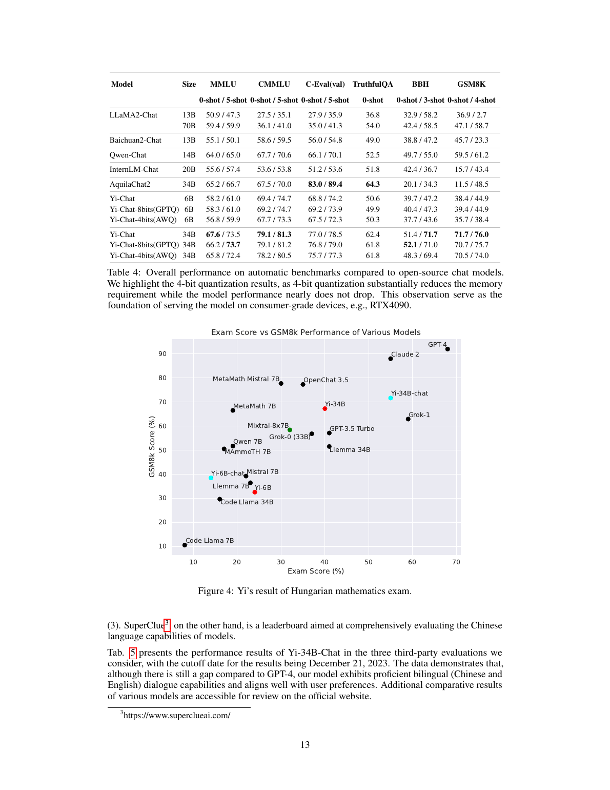
表 5 中，Yi-34B-Chat 的 AlpacaEval 为 94.08、Chatbot Arena Elo 为 1,110、SuperCLUE 为 71.87；对应 GPT-3.5-Turbo 为 89.37、1,117、59.39。图 5 进一步比较数据扩展时偏好增长速度。与 UltraChat 和清洗版本 UltraChat-200K 相比，扩大 Yi 数据规模会带来明显性能提升；我们把曲线更陡归因于数据质量。
7 能力扩展
本节讨论三种后训练扩展：把 Yi 基础模型扩展至 20 万长上下文、赋予视觉理解能力，以及通过深度扩展增强 6B 模型。
7.1 长上下文建模
长上下文方案包含持续预训练与微调两个轻量阶段。基本假设是：使用 20 万输入上下文任意位置中信息的潜力已存在于基础模型中。持续预训练“解锁”该能力，在“大海捞针”测试中取得强劲表现；微调再使回答风格符合人类指令与偏好。
7.1.1 持续预训练
我们通过序列并行与分布式注意力继续预训练完整注意力模型，不使用任何稀疏或线性注意力，而是直接实现完整注意力。Yi-6B、Yi-34B 基础模型使用三类混合数据继续训练：（1）第 2 节介绍的原始预训练数据；（2）对长度上采样的长上下文数据，长文档主要来自图书；（3）多文档问答合成数据，其中回答先复述相关段落再给出答案。数据方法大体遵循 Fu 等人和 Yu 等人的做法。模型在 50 亿词元上继续训练，批量为 400 万词元，即约 100 个优化步骤。与同期工作一致，这种轻量持续预训练已能在“大海捞针”测试中获得强表现。
7.1.2 监督微调
我们把短上下文 SFT 数据与长文档问答数据混合，以模型辅助自动方法构造文档问答。具体做法是：随机拼接多个文档形成一个序列，从长序列采样一个或多个段落，让聊天模型据此构造问题—答案对。
其中一个重要细节是复述与改写：给出答案前，先要求模型复述或转述原始段落。这一数据格式鼓励检索行为并抑制幻觉：面对问题时，模型更可能使用输入中的信息构造答案，而非调用可能相关但不准确的内部知识。微调模型部署于 www.wanzhi01.com。
图 6 与表 6 展示 20 万模型表现。图 6 是 Yi-34B-200K 的“大海捞针”测试，不过我们认为这种程度的检索对长上下文 LLM 相对容易。表 6 显示，上下文扩展并未显著影响短上下文通用能力。
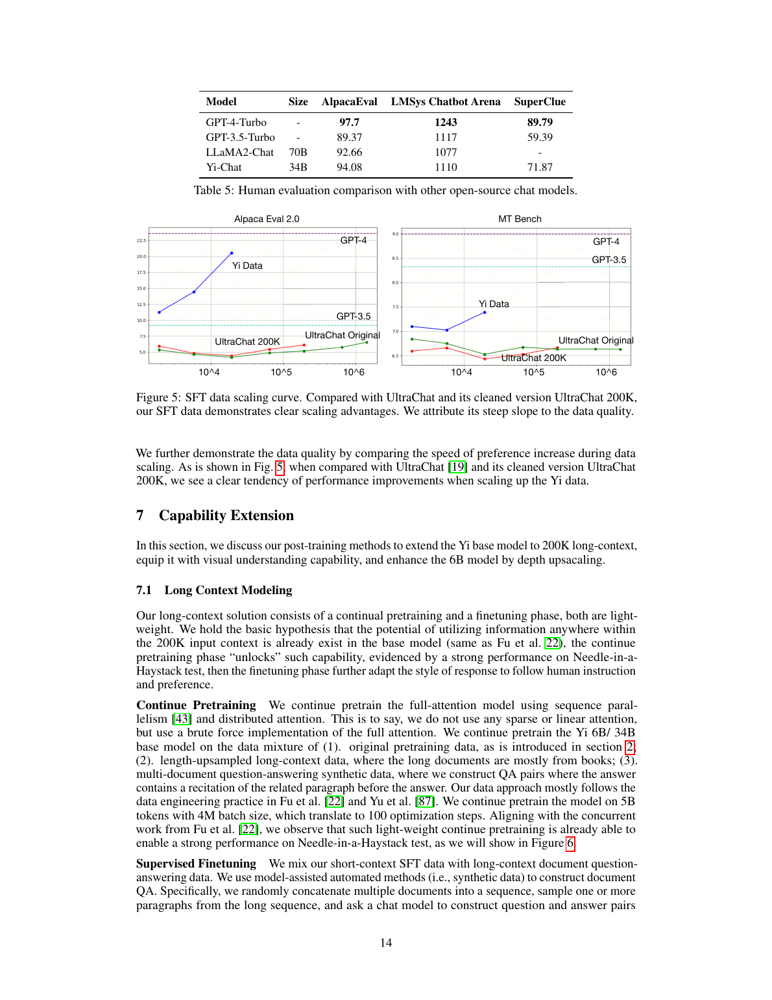
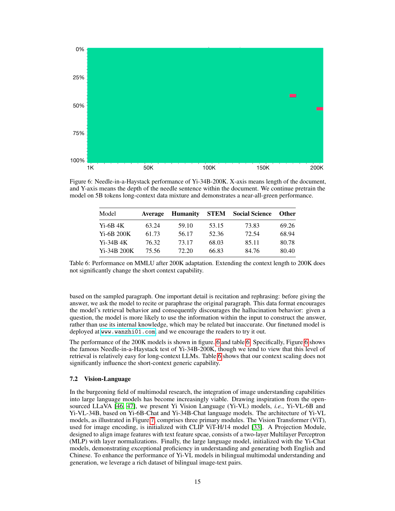
7.2 视觉—语言
多模态研究蓬勃发展，把图像理解能力集成进 LLM 越来越可行。受开源 LLaVA 启发，我们以 Yi-6B-Chat 与 Yi-34B-Chat 为语言模型，提出 Yi-VL-6B 与 Yi-VL-34B。
图 7 所示 Yi-VL 包含三个主要模块：（1）用于图像编码的视觉 Transformer，以 CLIP ViT-H/14 初始化；（2）把图像特征对齐到文本特征空间的投影模块，由带层归一化的两层多层感知机构成；（3）以 Yi-Chat 初始化的大型语言模型，擅长理解与生成英文、中文。训练使用丰富双语图文对，增强双语多模态理解与生成。
Yi-VL 分三个阶段训练：
- 阶段一： 图像分辨率 224²，训练视觉 Transformer 与投影模块参数。使用 LAION-400M 中一亿个图文对，主要目标是让视觉 Transformer 在指定架构中获取更多知识，并改善它与 LLM 的对齐。
- 阶段二： 把视觉 Transformer 图像分辨率提高到 448²，增强识别细致视觉细节的能力。数据包括 LAION-400M 的 2,000 万图文对，以及约 480 万来自 CLLaVA、LLaVAR、Flickr、VQAv2、RefCOCO、Visual7W 等来源的图文对。
- 阶段三： 训练整个模型，主要目标是增强多模态聊天，使其能无缝融合、解释视觉与语言输入。约一百万图文对来自 GQA、VizWiz VQA、TextCaps、OCR-VQA、Visual Genome、ShareGPT4V 等。为平衡数据，单一来源最多贡献 50,000 对。
阶段一、二的全局批量大小、学习率、梯度裁剪与训练轮数分别为 4,096、1×10⁻⁴、0.5、1；阶段三调整为 256、2×10⁻⁵、1.0、2。训练使用 128 块 NVIDIA A100 GPU，Yi-VL-6B 约需三天，Yi-VL-34B 约需十天。
表 7 给出 Yi-VL 发布时的 MMMU 测试集排行榜。该领域仍处于活跃研究期，我们会随社群进展持续改善 Yi-VL。
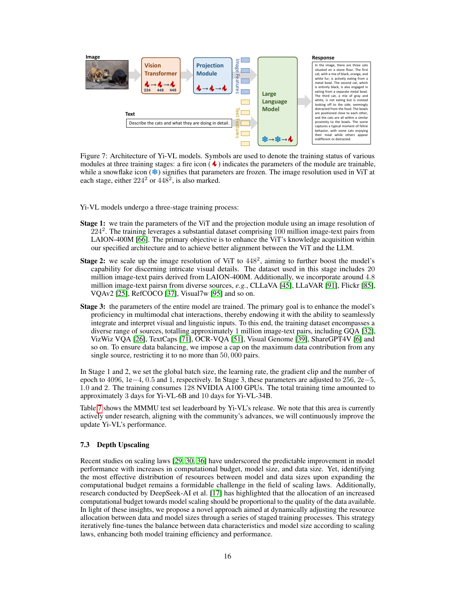
7.3 深度扩展
缩放定律研究表明，增加计算预算、模型规模与数据规模，会带来可预测的性能提升。但计算预算扩大时，如何在模型规模与数据规模间最有效地分配资源，仍是重大挑战。DeepSeek-AI 的研究还指出，增加的计算预算分配给模型扩展的比例，应与可用数据质量相称。
据此，我们提出一种新方法：通过分阶段训练，动态调整数据规模与模型规模之间的资源分配。该策略依据缩放定律，迭代微调数据特性与模型大小间的平衡，提高训练效率与性能。
7.3.1 方法
按照 Kim 等人的方法，把含 32 层的 Yi-6B 基础模型扩展为 48 层的 Yi-9B，做法是复制原模型第 12 至 28 层的 16 个中间层。深度扩展先增加基础模型深度，再对扩展后的模型继续预训练。
实验发现，可以根据每层输入与输出的余弦相似度选择复制层。这样可有针对性地扩展模型，无须立即增加预训练，且性能影响很小。图 8 显示，被复制层的输入与输出余弦相似度接近 1，所以复制这些层不会显著改变原模型输出的逻辑值。该方法根据内部处理动态优化架构，实现高效扩展。
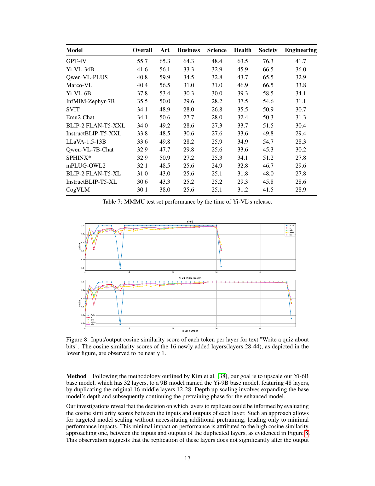
7.3.2 持续训练
数据集分两个阶段，共约 8,000 亿词元，其中约 70% 是近期收集并仔细筛选的。最后阶段提高代码数据覆盖率，以改善代码表现。
训练保持 3×10⁻⁵ 的恒定学习率；当模型损失进入平台期，就从 400 万词元开始逐步增大批量。其他参数与既有 Yi-6B 基础配置保持一致。渐增批量与其余稳定设置共同帮助模型应对大规模训练挑战。
表 8 展示这些策略的效果，比较 Yi-9B 在常识、推理、知识、代码和数学等基准上的表现。它表明，通过优化调整数据特征与模型规模的关系，这种方法确实能提高模型性能，并使 Yi-9B 在特定领域具有竞争优势。未经后续训练、只复制层得到的 Yi-9B Init 与 Yi-6B 大体接近；持续训练后的 Yi-9B 则在 GSM8K、MATH、HumanEval 与 MBPP 等任务上大幅提升。
8 最终讨论
本文讨论 Yi 语言模型家族的全栈开发。Yi-34B 达到匹配 GPT-3.5 的表现，并因四比特、八比特量化而可部署到消费级设备，是本地部署的理想模型。
Yi 预训练的关键经验涉及数据数量与质量：
- 使用比 Chinchilla 计算最优值更多的数据训练，会带来清晰、一致的性能收益，我们强烈建议所有预训练团队采用。Yi 使用 3.1 万亿词元，但性能尚未在这一规模饱和；增加数据仍可能继续提高表现。
- 预训练数据质量最关键的两个因素，是数据来源——例如文本是为专业用途撰写，还是随意发布在社交媒体——以及数据清洗细节，例如过滤与去重强度。数据清洗流水线非常复杂，难以大规模进行网格搜索式优化，因此当前方案仍有改进空间。
Yi 微调的核心经验，是由机器学习工程师直接逐条处理少量数据——不超过一万条——经过多轮重迭代，并依据真实用户反馈改善。这明显不同于 FLAN 开创、UltraChat 延续的指令规模化路线。
当前结果表明，在预训练数据量固定时，推理能力——我们认为这是语言模型现实部署的核心能力——与模型规模强相关。继续使用彻底优化的数据扩大模型参数，将使未来版本产生更强的前沿模型。
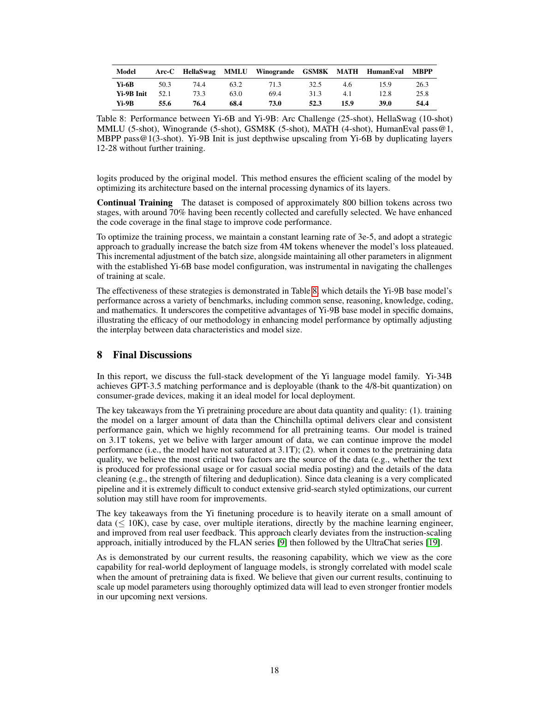
附录 A 作者名单与贡献
团队成员从前沿研究、机器学习基础设施、预训练、微调与人工智能对齐、多模态、安全与负责任人工智能、部署等方面参与 Yi 开发。作者按字母顺序列出，所有作者对本工作贡献相同。
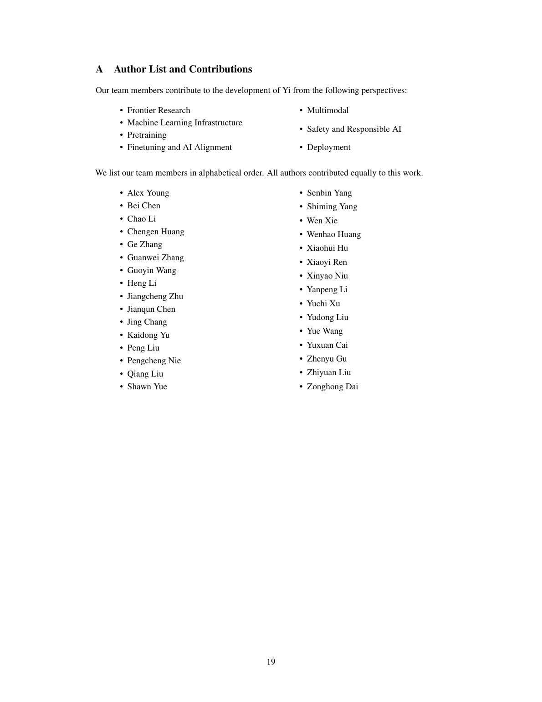
参考文献（原文截图）
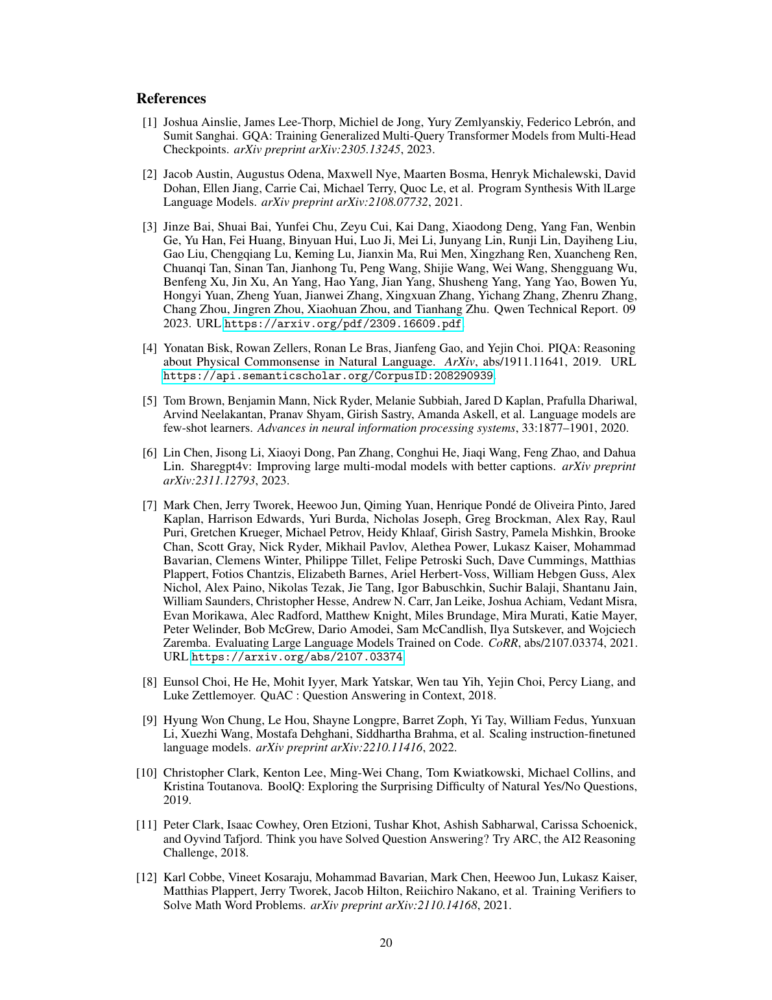
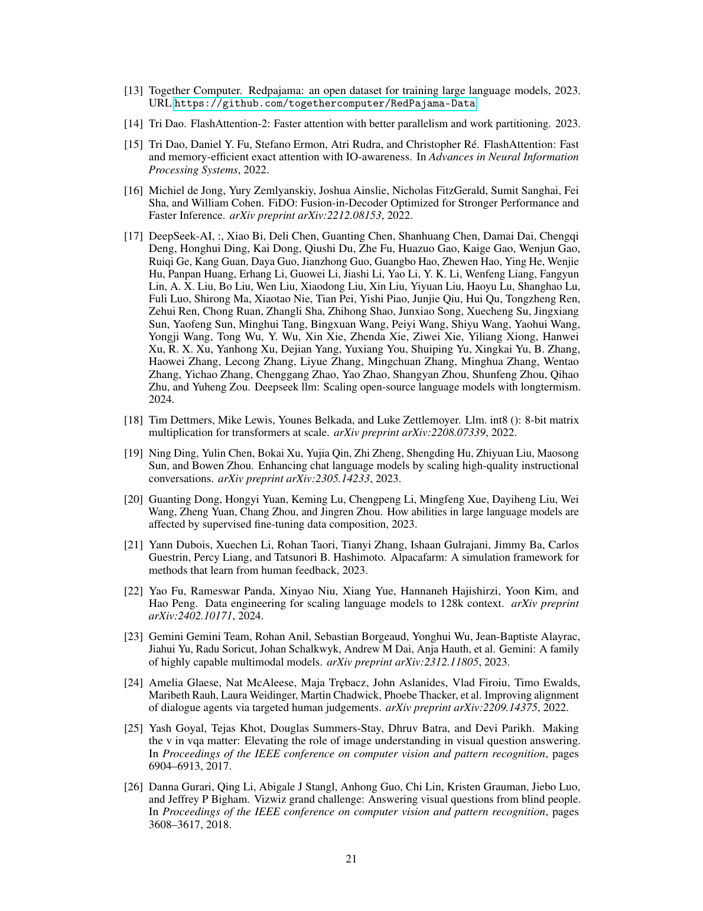
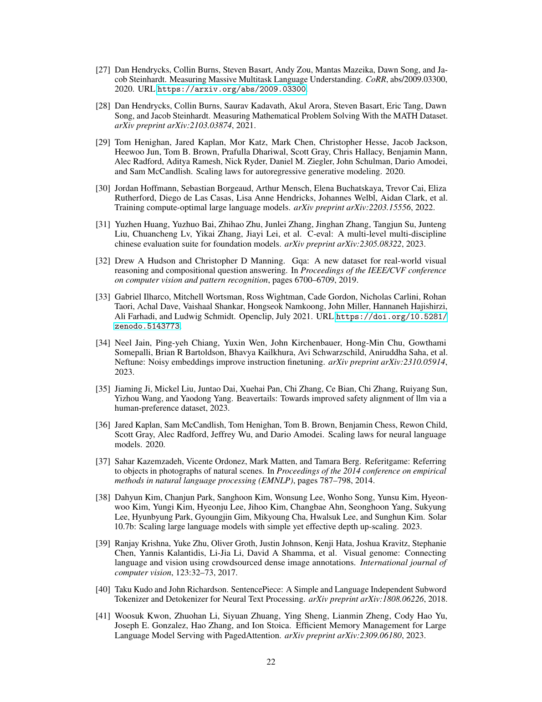
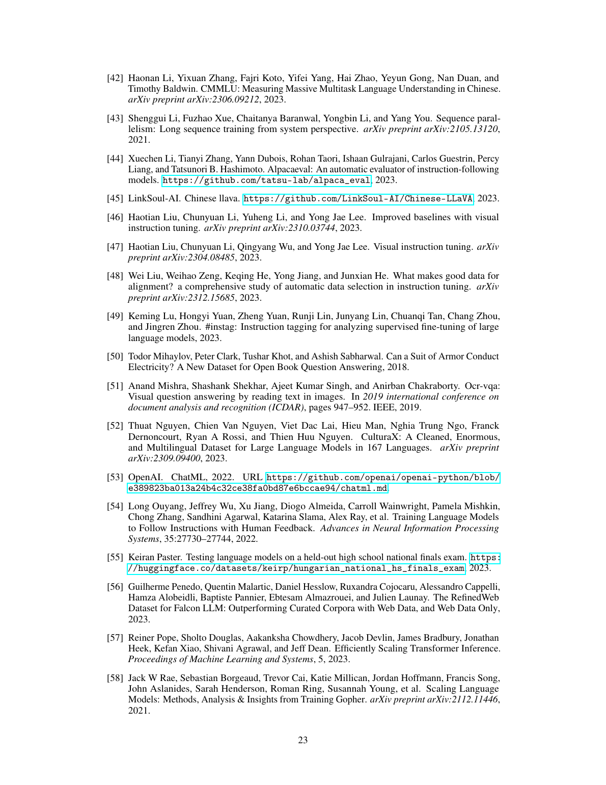
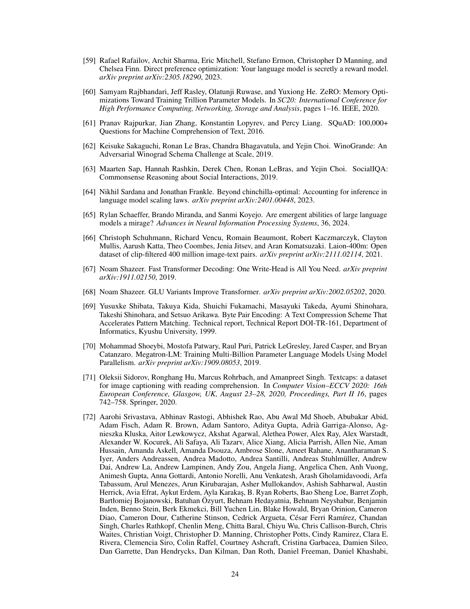
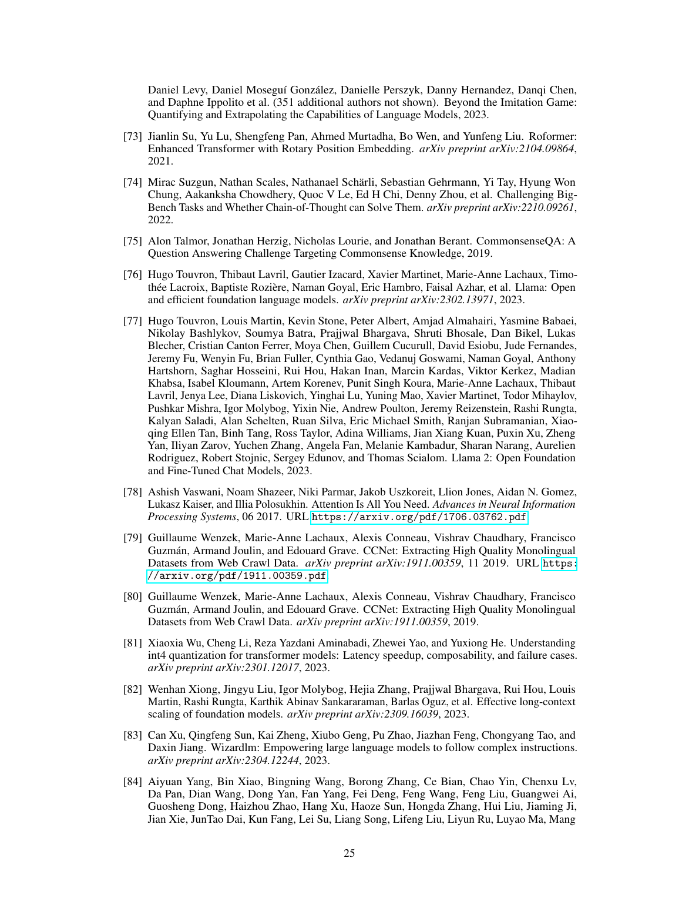
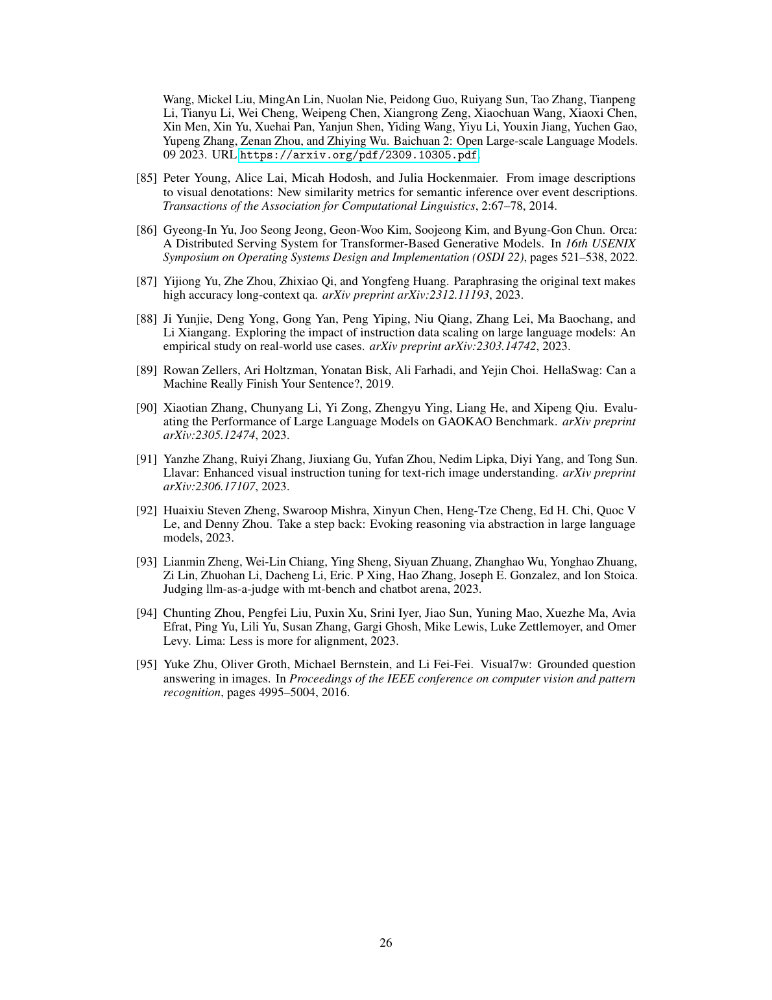